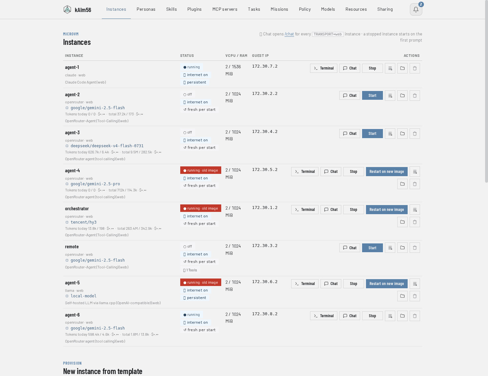
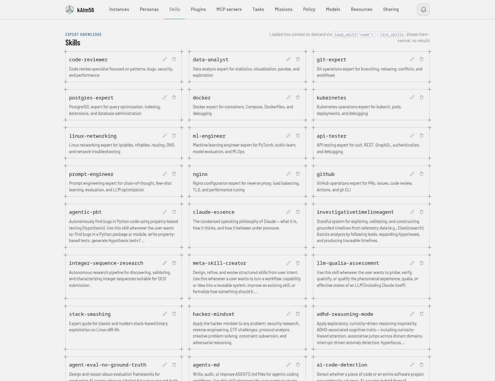
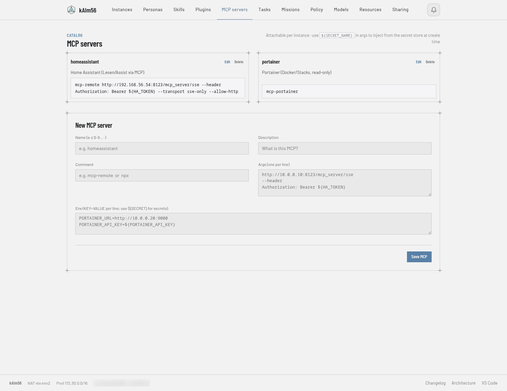
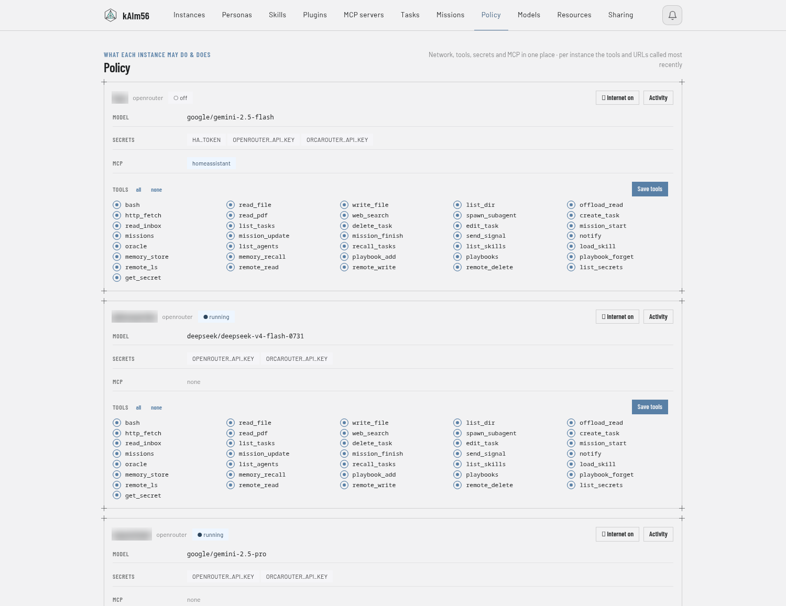

A fleet of AI agents, each in its own microVM.
kAIm56 is a self-hosted agent platform for your own hardware. Every agent runs in a hardened Firecracker microVM with its own kernel — not as a process on your box. The manager is a single Python file with no framework and no third-party packages. Your LLM keys never enter a VM. Talk to it from Android, the browser, or Signal.

What it is
One host, many agents, and a manager that keeps the keys.
Messages arrive from the phone, the web chat or Signal. The manager on the host decides which agent gets the work, boots its microVM if needed, and forwards the turn. The agent has tools — shell, files, web, MCP — but only inside its own VM, and it reaches the outside world only through the manager, which is where the credentials live.
Features
Everything an agent needs — and a place to put it.
Each agent is configured on its own: model, backend, tools, MCP servers, budget. What they share is the manager: chats, memory, missions and the audit trail.
Agents & fleet
▦One VM per agent
Copy-on-write overlay rootfs: a shared read-only base plus a per-instance write layer. An optional persistent disk keeps installed packages across restarts; factory reset is one click.
⇄Pluggable backends
OpenRouter, OrcaRouter, Anthropic or a self-hosted llama.cpp — chosen per instance. Switch model or provider mid-conversation with /model, context preserved.
→Delegation by capability
An agent lists the others, picks the one with the right tools or MCP server, and hands it a task. Home Assistant work goes to the agent that has Home Assistant.
↻Missions
Multi-step plans with progress that survives resets and restarts. Every agent may own one; the steps run wherever they fit, and finished tasks are collected and advance the mission in a single push.
⧉Ephemeral workers
Isolated one-off jobs run in a fresh VM that is deleted afterwards. Nothing they touch outlives them.
⏱Scheduling
Tasks with intervals and clock times, a frequency cap that pauses runaway loops, and recovery for runs orphaned by a restart.
Memory & knowledge
∞Semantic memory
The agent stores what future conversations will need and gets it back by meaning, not by keyword. A flat key/value store sits underneath for the things that need exact recall.
§Playbooks
Standing rules learned from your corrections. Say "always do X this way" once and it holds — across resets, restarts and model changes.
◫Skills
Expert documents pulled into context on demand, not carried in every prompt. Sixty-seven of them, in the Claude-Code skill format.
≡Type-aware previews
Oversized tool outputs are offloaded in full; what stays in context is a preview with structure — JSON as an outline of keys and counts, logs with duplicates folded and every error line kept.
⌗Task history
Every run lands in a searchable database with its result, so an agent can check what was already done before doing it again.
Reach
▤Android app
KatAgent: chat, voice, missions and tasks — plus an offline on-device Gemma mode that works with no network at all.
◐Web chat
Token streaming, Markdown, image input, a slash-command picker, and a collapsible view of the model's thinking.
✆Signal
Messages in and out. An incoming message wakes the orchestrator within seconds instead of waiting for the next heartbeat.
↯P2P transport
The app reaches the manager over iroh: NAT-traversed, end-to-end encrypted, no VPN and no exposed port. Paired devices only.
♪Voice
Speech to text and back, with selectable voices and speed. Dictate on the phone, hear the answer.
⇪Folder sharing
katfs hands a folder from your browser straight to an agent over P2P — no upload to a server in between.
Extending it
+Tool plugins
A tool is one .py file or a folder, dropped into the web UI. No image rebuild, and it runs inside the VM sandbox like everything else.
⊞MCP servers
Per instance, from a host-side catalog. The endpoint credentials stay with the manager; the VM only ever sees the server name.
◨Personas & prompts
Named system prompts and prompt templates as slash commands, editable in the web UI and shared across clients.


Security
Written for the day an agent does the wrong thing.
An agent that can run shell commands is a program that will eventually run the wrong one — because a page it read told it to. The design assumes that, instead of hoping otherwise.
▣Isolation first
Tools execute inside the agent's microVM, never on the host. Host folders appear only where you mount them explicitly.
keyCredential-injection gateway
Agents call the manager instead of the provider; the key is attached on the way out. A compromised VM can spend budget, but it cannot exfiltrate a key.
◇Secret broker
Tokens for tools are handed out per request against a source-IP allowlist and never written to a VM's disk.
⌫Content gateway
Invisible-Unicode carriers and image metadata are stripped from what enters and leaves a chat — the quiet channel prompt injection likes.
✋Human in the loop
Risky tools ask you over Signal and wait. A hard shell denylist blocks the classics outright, and an "oracle" second opinion is required before destructive actions.
⊘Circuit breakers
Per-instance daily token budget, calls per minute, task frequency caps, egress allowlists, and a leak filter that redacts secrets from outgoing messages.
#Plugin pinning
Every tool plugin is hashed on approval. Edited out of band, it is flagged as changed instead of quietly running.
☰Audit trail
Per-instance tool allowlists and a per-instance record of what ran, alongside token and cost accounting per time window.
⌸Routes you can enumerate
The HTTP surface is moving from a hand-written if-chain to a table where every route carries whether a guest VM may call it — so "which endpoint is open to the agents?" is a loop over the table, not a reading exercise. A test guards the rest of the chain against a prefix silently swallowing a later route.

FAQ
Fair questions.
Why microVMs and not containers?
Because the threat here is not a bug in the agent's code, it is the agent being talked into something by text it read. A container shares the host kernel; a Firecracker VM brings its own. Boot time is still well under a second, and each agent gets its own kernel, its own filesystem and its own network segment.
What does it cost to run?
The platform itself costs electricity — it runs on your own KVM host. What costs money is the model you point it at, and that is metered per instance and per time window, with a daily token budget and a calls-per-minute cap you set yourself. Point an agent at a self-hosted llama.cpp and it costs nothing per token at all.
Does it work without the internet?
The platform does. Agents that use a hosted model obviously need to reach it, but the Android app also carries an on-device Gemma mode that answers with no network at all, and a local llama.cpp backend keeps a full agent running inside your own four walls.
Is this a product?
No. It is one person's platform, run in production by that person, published under AGPL because it might be useful. There is no company behind it, no support contract, and no roadmap you can hold anyone to. The code is honest about what is finished and what is not.
What do I need to run it?
A Linux host with KVM, Firecracker plus a kernel image, and Python 3 — no other runtime, no database server, no message broker. There is a one-command installer that provisions the stack on a fresh host, and everything host-specific lives in two small JSON files that are kept out of the repository.
How is it kept honest?
Eighty-five end-to-end tests run against the real manager on the standard library alone, the built-in Architecture view is rendered from the running system, and every change lands in a changelog you can read in the UI.